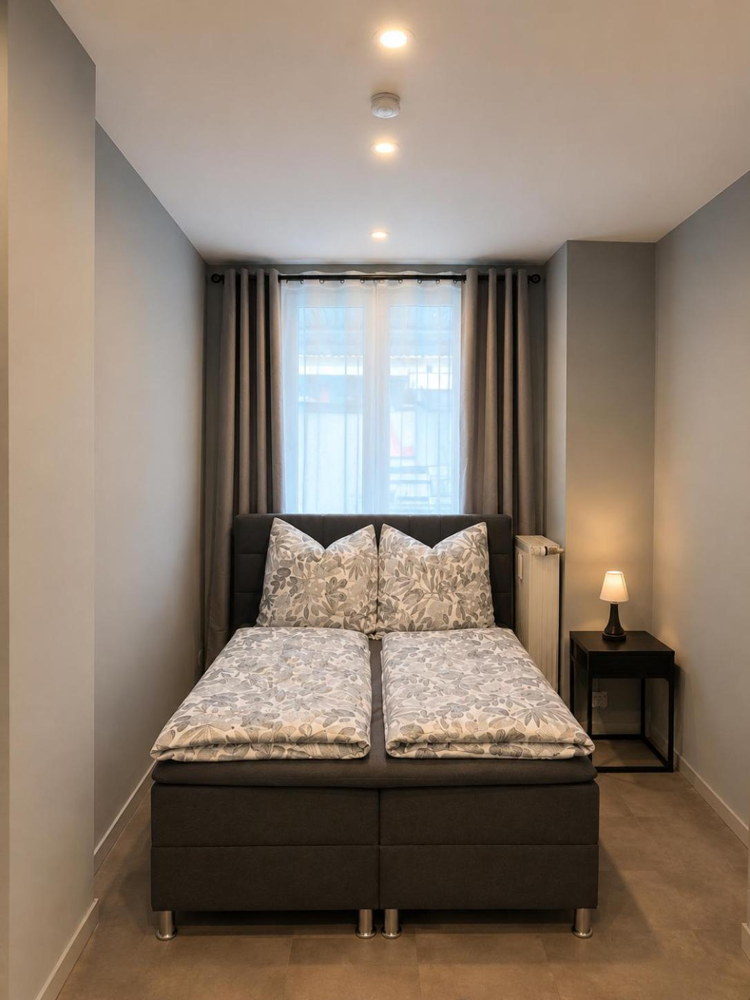
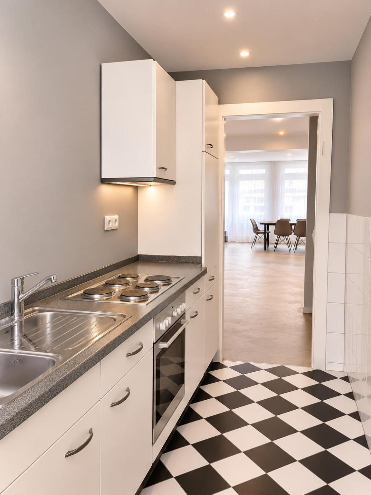
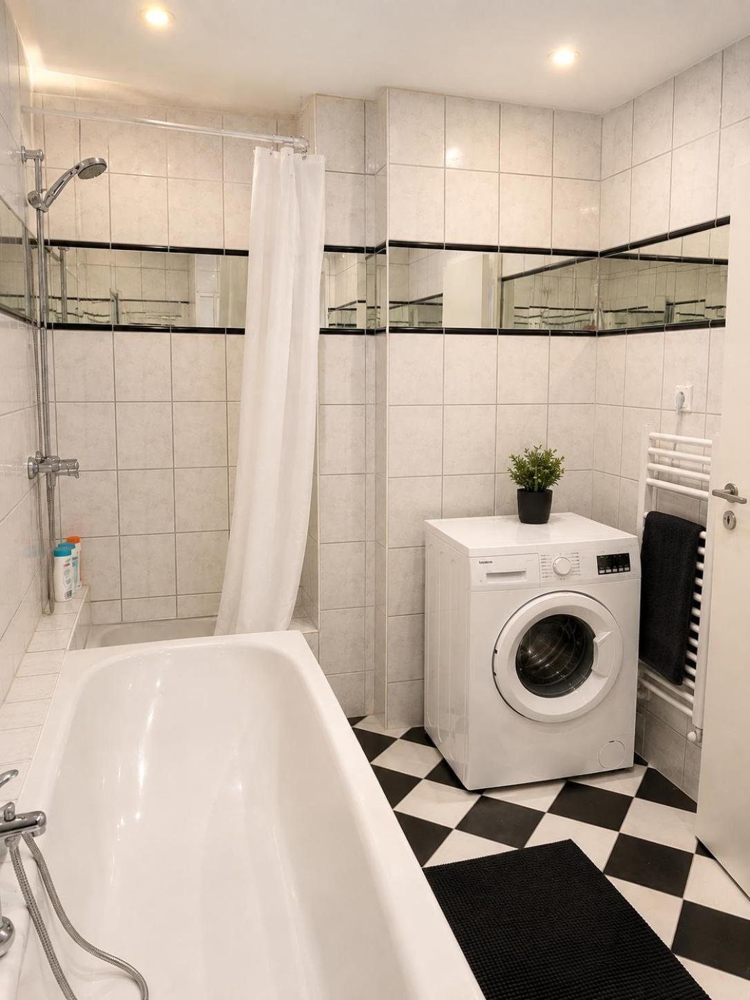
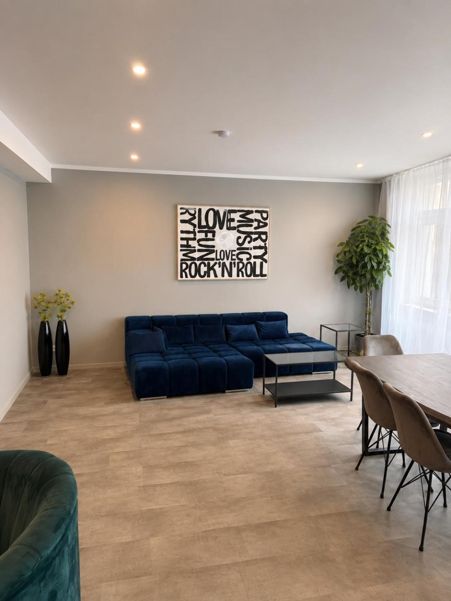
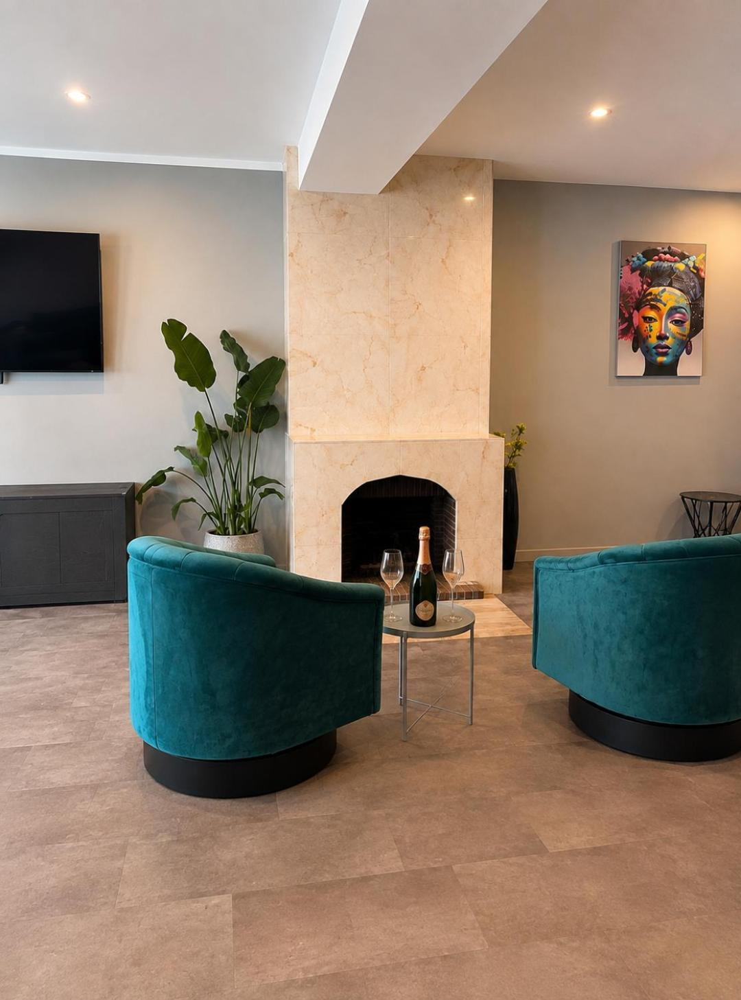
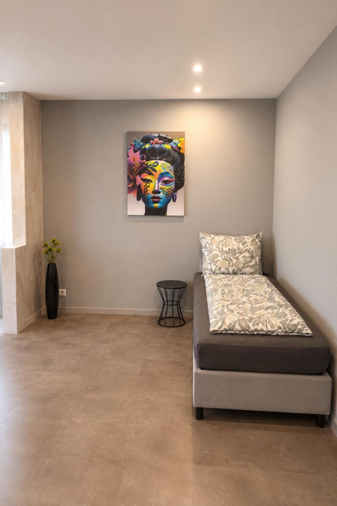
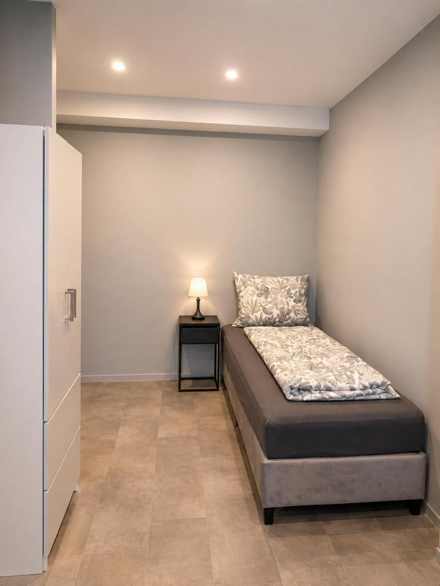
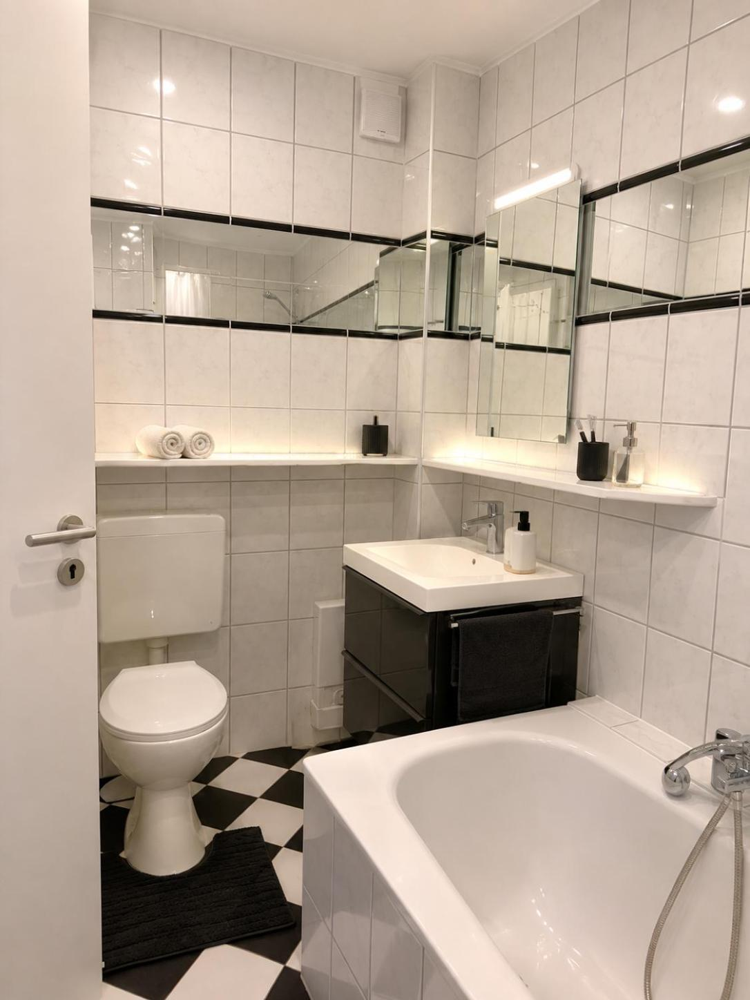

Unsere Apartments
Altstadt Living Deluxe
80 m² für bis zu vier Gäste. Zwei Schlafzimmer, eigener Wohnbereich und ein Bad mit Badewanne.
Alle Apartments entdecken- Wohnfläche80 m²
- GästeBis zu 4 Gäste
- Schlafen2 Schlafzimmer
- KücheMit Backofen
- BalkonMit Stadtblick
- BadezimmerMit Badewanne





Alle 10 Bilder ansehen





Zwei Schlafzimmer.
Platz für gemeinsame Tage.
Starten Sie mit einem gemeinsamen Frühstück, erkunden Sie die Gassen der Altstadt und kommen Sie am Abend in Ihren eigenen Wohnbereich zurück. Zwei separate Schlafzimmer bieten Raum zum Zurückziehen, der Essplatz Raum zum Zusammensitzen.
Ihr nächster Aufenthalt
Ihr Aufenthalt.
Ihre Zeit.
Wählen Sie Ihre Reisedaten für Altstadt Living Deluxe.
Ihr Zuhause auf Zeit
Gemeinsam Düsseldorf erleben.
Auf 80 m² wohnen.
Altstadt Living Deluxe bietet mit zwei Schlafzimmern und einem Wohn- und Essbereich Platz für bis zu vier Gäste. Die blauen Sitzmöbel setzen einen Farbakzent im großzügigen Wohnraum. Ein Balkon mit Stadtblick ergänzt das Apartment am Burgplatz.
Die eigene Küche ist mit Backofen, Kochfeld, Kühlschrank, Kaffeemaschine und Wasserkocher ausgestattet. Im Badezimmer erwartet Sie eine Badewanne; eine Waschmaschine, ein Haartrockner und Handtücher sind ebenfalls vorhanden. Für gemeinsame Mahlzeiten und Abende steht ein eigener Essbereich bereit.
Registrierungsnummer: DEU-05111000-2-0028347-26
Auf einen Blick
- Wohnfläche
- 80 m²
- Belegung
- Bis zu 4 Gäste
- Aufteilung
- 2 Schlafzimmer, Wohn- und Essbereich
- Küche
- Backofen, Kochfeld, Kühlschrank, Kaffeemaschine, Wasserkocher
- Badezimmer
- Badewanne, Haartrockner, Handtücher
- Balkon
- Privater Balkon mit Stadtblick
- Extras
- Flachbild-TV, Waschmaschine
- Check-in
- 15:00–18:00 Uhr
- Check-out
- 08:00–12:00 Uhr
Kinder sind im Deluxe willkommen. Anzahl und Alter bitte im abschließenden Buchungsformular angeben; insgesamt sind bis zu vier Gäste möglich.
Nichtraucherunterkunft · Keine Haustiere · Keine Partys
Ihre Adresse in Düsseldorf
Burgplatz 14.
Mitten in der Altstadt.
Beide Apartments liegen am Burgplatz 14, 40213 Düsseldorf. Von hier erreichen Sie den Rhein, den Schlossturm und das historische Rathaus zu Fuß. Restaurants und Cafés liegen in der direkten Umgebung.
Noch eine Möglichkeit